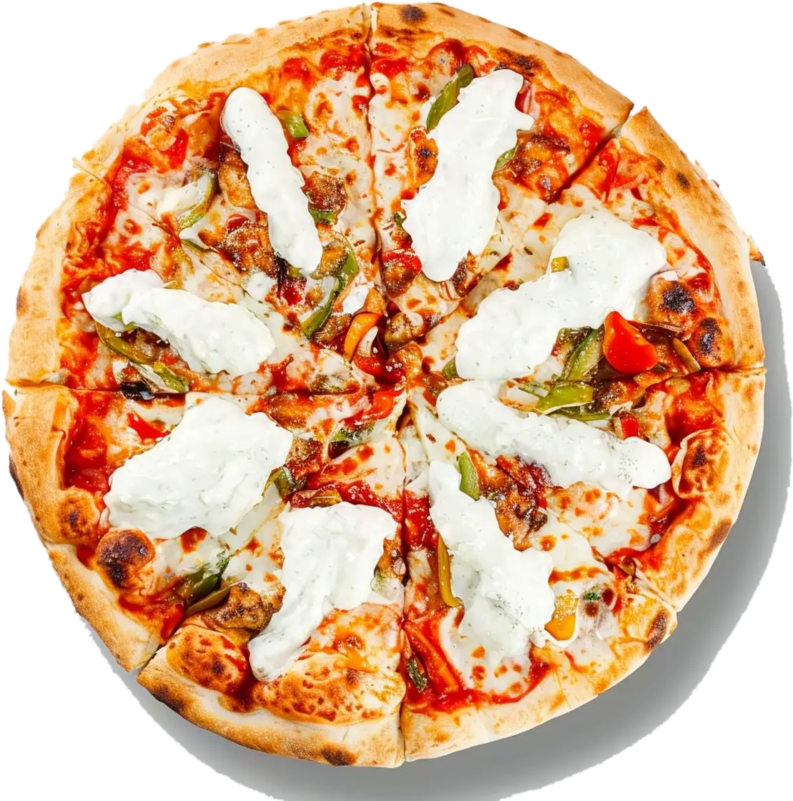
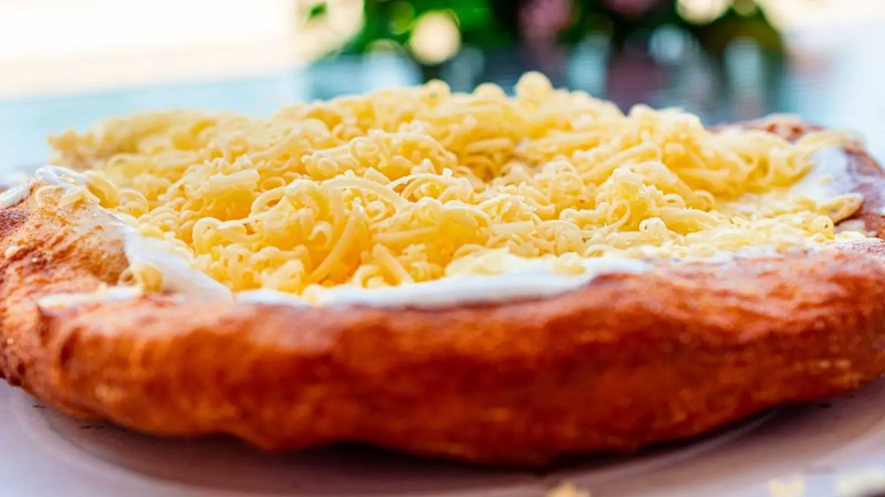
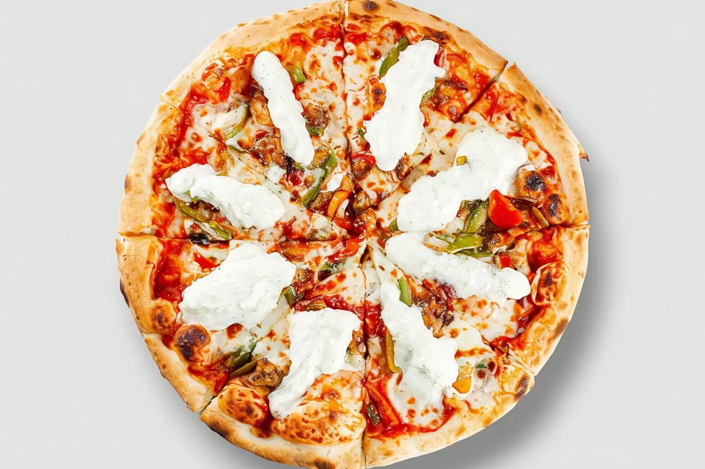
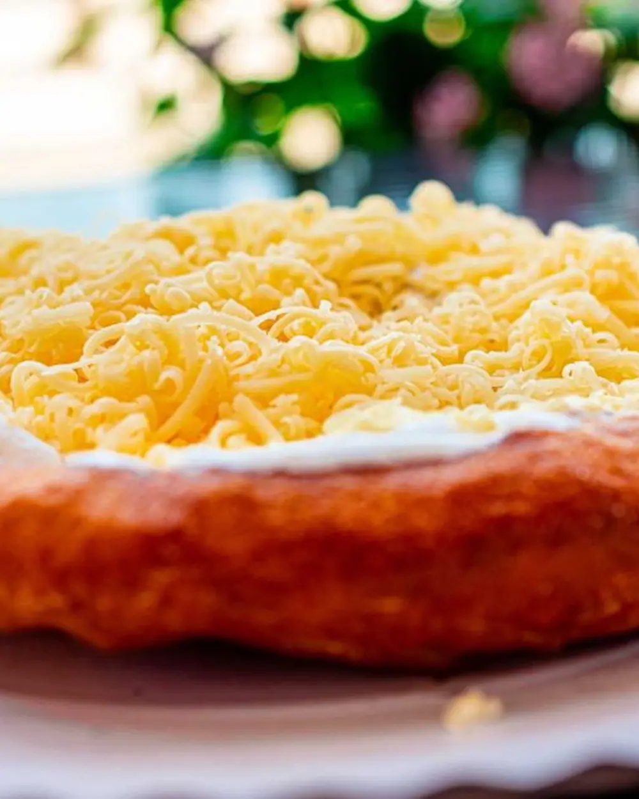
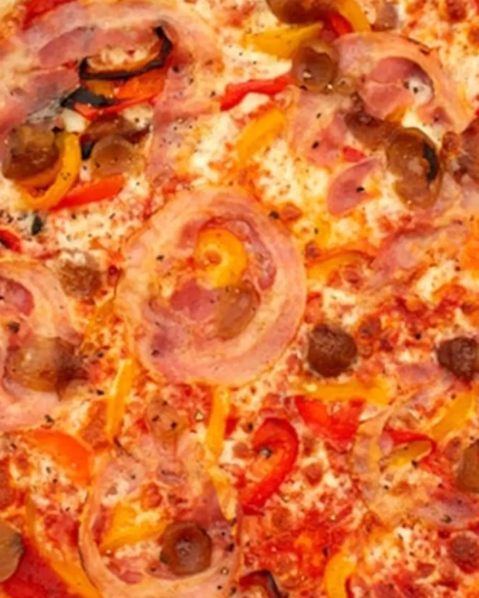
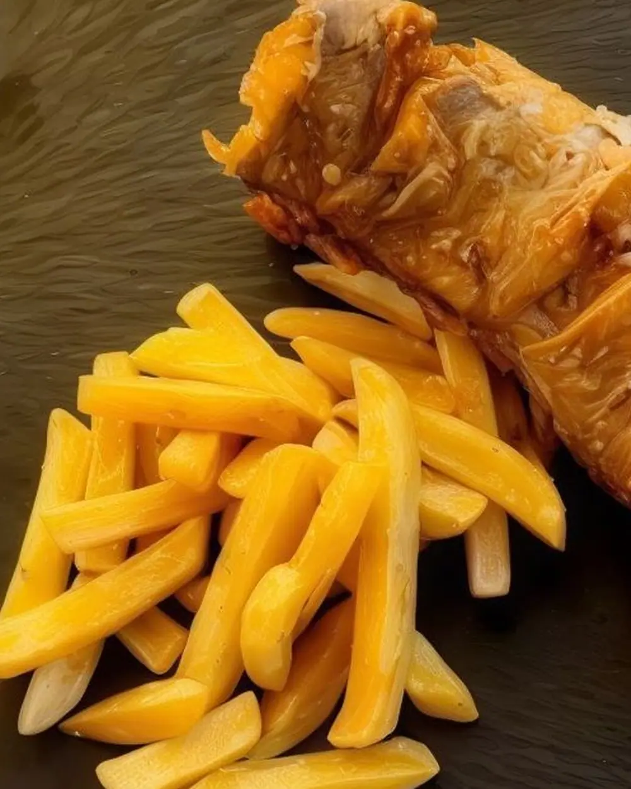
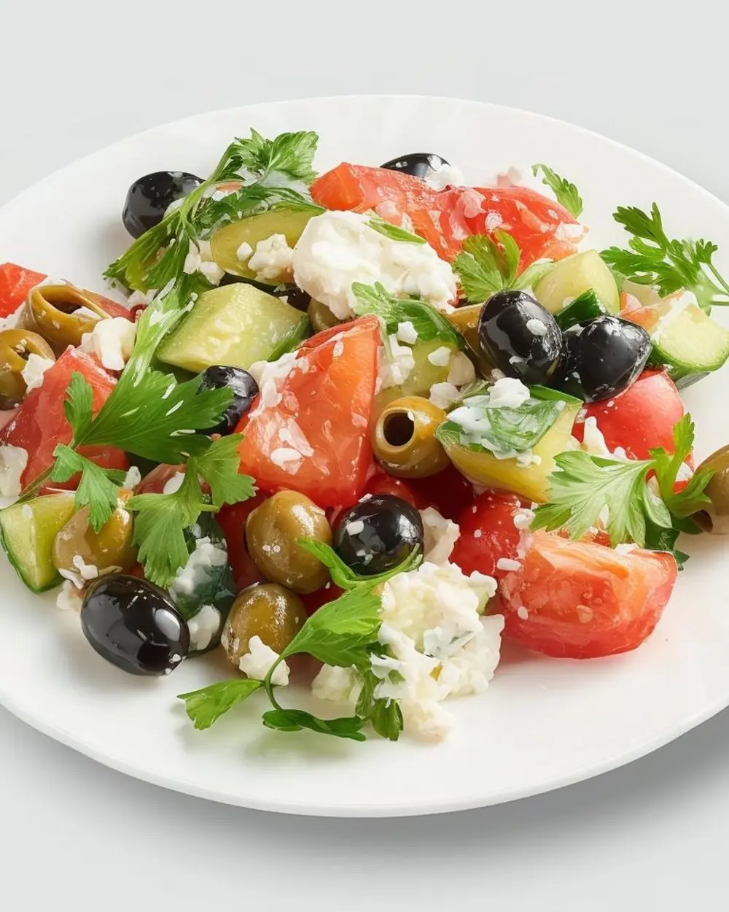

Leves
Azték barackleves
Babgulyás – a hét másik napján
A menü része
Rendelek
Diósd · Pacsirta utca 29.
A napi ebéd, amit vársz.
Házias ízek modern köntösben – napi menü, pizza és frissensültek, Diósdon és a környéken házhoz is.

4 menü → az 5. ajándék
Ajánlat
Rendelj négy napi menüt – az ötödiket a DTC fizeti. Az akció a heti rendelésekre érvényes, hétfőtől péntekig.
Rendelek most
(02) — Kínálat
Pizzák, frissensültek, saláták és köretek – ahogy a DTC kínálja. Rendelés házhoz vagy elvitelre.
(03) — Rendelés
Nézd meg a mai menüt vagy az étlapot, és jelöld be, mi kell: leves, főétel, adagméret.
Add le a rendelésed online, vagy hívd a +36 70 413 3439 számot. Fizethetsz online is.
Hétköznap 11:00 és 15:00 között kivisszük – vagy érted jössz a Pacsirta utcába.
A látványtervben a gomb a jelenlegi rendelési rendszerre mutat – az új oldalra később saját kosár és rendelési motor is integrálható.
(04) — Galéria
Kattints a nagyításhoz. A képek a DTC Bisztró nyilvánosan elérhető ételfotói.

(05) — Miért DTC?




Házias ízek modern köntösben: a fogások frissen készülnek, nem előre összedobva.
Hétfőtől péntekig új napi menü. Az online rendelés 08:00 és 14:55 között nyitva áll.
A napi menüt házhoz is rendelheted: a kiszállítás 11:00 és 15:00 között történik.
2049 Diósd, Pacsirta utca 29. – telefonon és online is elérsz minket.
(06) — Kapcsolat
2049 Diósd,
Pacsirta utca 29.
Kádár Gergely
Online rendelési idő
A helyszíni nyitvatartásról érdeklődj telefonon – az online rendelés a fenti időben fogadott.
Megéheztél?
Rendelek